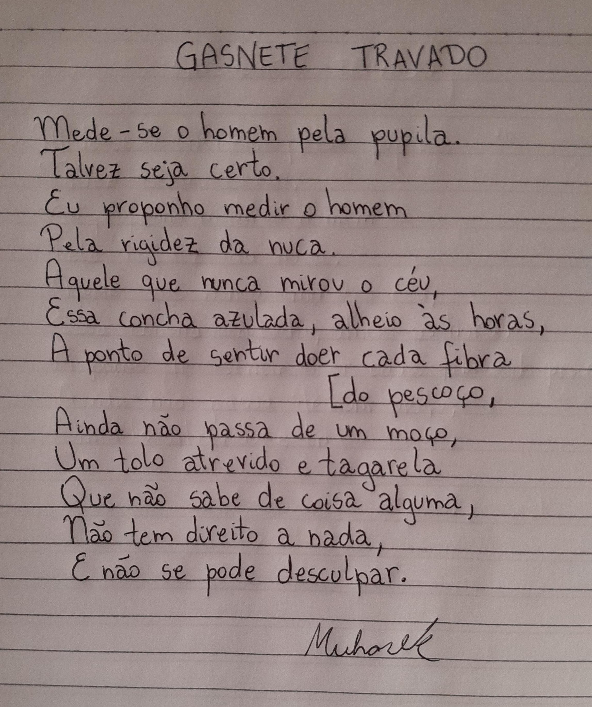

Euzinho
Me chamo Muhare Khalil Kovatli. Achou meu nome estranho? Ponha a culpa no meu avô sírio. Já senti o frio de 26 invernos, muitos deles trabalhando, estudando, chupando cana e assoviando. Depois de flertar com a Física, me aquietei na área de TI, que sempre foi minha praia. Segue abaixo algumas fotos deste que vos fala e daquilo que significa muito para mim.

C'est moi

Sou fanático religioso

Adoro livros,
às vezes até os leio

Meu gatilho (gato-filho)

Não bastando isso, tenho-me por poeta.
De dois centavos, é claro.
Mas ainda poeta.